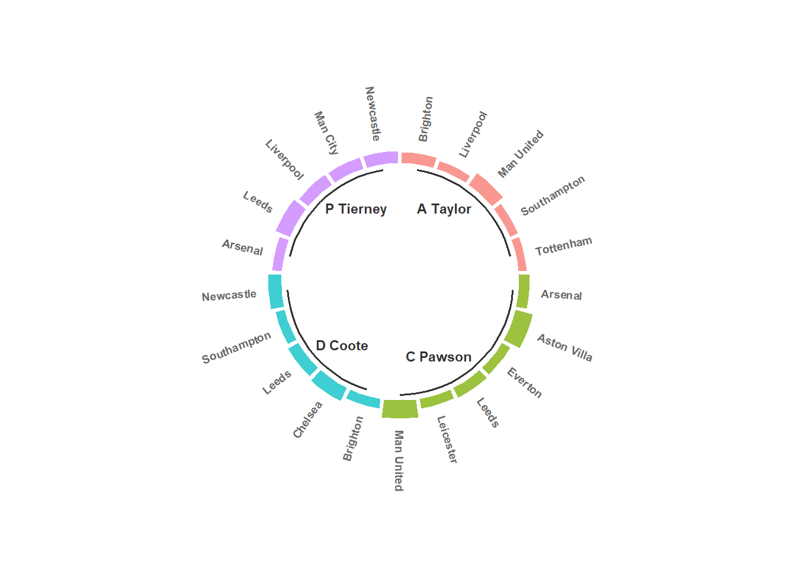

Intodução
A premier League é a liga mais famomasa do mundo, sendo transmitida em vários países, ela é conhecida por ter grandes craques e um jogo frenético.
Esse tipo jogo é permitido por conta de uma arbitragem mais permissiva aos contatos físicos entre jogadores, sempre dando preferência pela continuidade da partida realizando pouquissimas intervenções.
O meu objetivo é analisar a temporada 2021-2022 do ponto de vista da arbitragem levando em consideração cartões , n°jogos e outros parâmetros.
Bibliotecas
Dados
O dataset foi disponibilizado pelo projeto tidytuesday com a autoria de Evan Gower. O projeto disponibiliza diversas bases de dados reais e de forma gratuita.
Os dados podem ser carregados pela biblioteca:
install.packages("tidytuesdayR")
tuesdata <- tidytuesdayR::tt_load('2023-04-04')
tuesdata <- tidytuesdayR::tt_load(2023, week = 14)
soccer <- tuesdata$soccerOu pelo link disponibilizado no GitHub.
dados <- readr::read_csv("https://raw.githubusercontent.com/rfordatascience/tidytuesday/master/data/2023/2023-04-04/soccer21-22.csv")
dados |> head() |>
knitr::kable(caption = "Tabela")| Date | HomeTeam | AwayTeam | FTHG | FTAG | FTR | HTHG | HTAG | HTR | Referee | HS | AS | HST | AST | HF | AF | HC | AC | HY | AY | HR | AR |
|---|---|---|---|---|---|---|---|---|---|---|---|---|---|---|---|---|---|---|---|---|---|
| 13/08/2021 | Brentford | Arsenal | 2 | 0 | H | 1 | 0 | H | M Oliver | 8 | 22 | 3 | 4 | 12 | 8 | 2 | 5 | 0 | 0 | 0 | 0 |
| 14/08/2021 | Man United | Leeds | 5 | 1 | H | 1 | 0 | H | P Tierney | 16 | 10 | 8 | 3 | 11 | 9 | 5 | 4 | 1 | 2 | 0 | 0 |
| 14/08/2021 | Burnley | Brighton | 1 | 2 | A | 1 | 0 | H | D Coote | 14 | 14 | 3 | 8 | 10 | 7 | 7 | 6 | 2 | 1 | 0 | 0 |
| 14/08/2021 | Chelsea | Crystal Palace | 3 | 0 | H | 2 | 0 | H | J Moss | 13 | 4 | 6 | 1 | 15 | 11 | 5 | 2 | 0 | 0 | 0 | 0 |
| 14/08/2021 | Everton | Southampton | 3 | 1 | H | 0 | 1 | A | A Madley | 14 | 6 | 6 | 3 | 13 | 15 | 6 | 8 | 2 | 0 | 0 | 0 |
| 14/08/2021 | Leicester | Wolves | 1 | 0 | H | 1 | 0 | H | C Pawson | 9 | 17 | 5 | 3 | 6 | 10 | 5 | 4 | 1 | 2 | 0 | 0 |
Mão na massa
Quem apitou mais jogos?
dados |>
dplyr::group_by(Referee) |>
dplyr::summarise(nJogos = n(),
faltas = sum(HF) + sum(AF),
amarelos = sum(HY) + sum(AY),
vermelhos =sum(HR) + sum(AR) ) |>
dplyr::arrange(desc(nJogos)) |>
dplyr::slice(1:10) |>
knitr::kable(caption = "Temporada 2021-2022",
col.names = c("Árbitros","N°Jogos","N°Faltas",
"Amarelos","Vermelhos"),
align = "ccccc")| Árbitros | N°Jogos | N°Faltas | Amarelos | Vermelhos |
|---|---|---|---|---|
| A Taylor | 28 | 548 | 101 | 5 |
| P Tierney | 27 | 583 | 103 | 5 |
| C Pawson | 26 | 576 | 107 | 2 |
| M Atkinson | 26 | 406 | 64 | 2 |
| M Dean | 26 | 501 | 82 | 2 |
| M Oliver | 26 | 551 | 73 | 7 |
| J Moss | 25 | 448 | 58 | 4 |
| D Coote | 20 | 476 | 90 | 2 |
| S Attwell | 20 | 364 | 70 | 1 |
| A Marriner | 19 | 365 | 61 | 2 |
Em que mês saiu mais cartão amarelo?
df_Jogos_cartao <- dados |>
dplyr::mutate(mes = lubridate::month(Date,label = TRUE)) |>
dplyr::group_by(mes) |>
dplyr::summarise(jogos = n(),
cartao = sum(HY) + sum(AY) + sum(HR) + sum(AR))
df_Jogos_cartao |> ggplot2::ggplot(aes(x= mes, y =cartao, label = cartao)) +
ggplot2::geom_col(fill = "#1b662c" ) +
ggplot2::geom_label() +
labs(title = "Distribuição de Cartões na Premier League",
subtitle = "Amarelos e vermelhos da temporada 2021-2022",
x = "Mês", y = "N°de Cartões",
caption = "Mendes, Jorge L.") +
ggplot2::geom_hline(yintercept=mean(df_Jogos_cartao$cartao),linetype = 2) +
ggplot2::annotate("text",x = 6,y =145,
label = glue::glue("Média:{mean(df_Jogos_cartao$cartao)}")) +
theme(plot.title = element_text(face = "bold",size = 14),
axis.text.y =element_text(face ="bold",
colour = "#030202"),
axis.text.x =element_text(face ="bold",
colour = "#030202"))As competições Europeias seguem, em geral, o calendário é internacional. A temporada começa em agosto de determinado ano e termina em maio do ano seguinte. A premier league tem uma particularidade (se comparada com as outras grandes ligas) no seu calendário, o intervalo entre os jogos de dezembro é menor, tendo a rodada do Boxing Day com partidas ocorrendo dia 26 de dezembro.
O quanto o número de jogos impactam na quantidade de cartões?
df_Jogos_cartao |> ggplot(aes(x = mes, y=jogos)) +
ggplot2::geom_point(aes(size = cartao),color= "#424d6b") +
labs(title = "Distribuição de Jogos da Premier League",
subtitle = "Temporada 2021-2022",
x = "Mês", y = "N°de Jogos",
caption = "Mendes, Jorge L.,2024") +
theme(plot.title = element_text(face = "bold",size = 14),
axis.text.y =element_text(face ="bold",
colour = "#030202"),
axis.text.x =element_text(face ="bold",
colour = "#030202"))Diferente do campeonato brasileiro é necessário 5 cartões para o jogador ser suspenso na Premier League.
Considerando os árbitros que mais distribuiram cartões amarelos nessa temporada (2021-2022). Quais os clubes preferidos deles?
Selecionando os árbitros e separando os times.
lista_arbitro <- c("C Pawson","P Tierney","A Taylor","D Coote")
a_H <- dados |> dplyr::filter(Referee %in% lista_arbitro) |>
dplyr::group_by(Referee,HomeTeam) |>
dplyr::summarise(cartaoH = sum(HY)) |>
dplyr::rename(time = HomeTeam)
a_A <- dados |> dplyr::filter(Referee %in% lista_arbitro) |>
dplyr::group_by(Referee,AwayTeam) |>
dplyr::summarise(cartaoA = sum(AY)) |>
dplyr::rename(time = AwayTeam)
df <-a_H |> dplyr::full_join(a_A) |>
dplyr::mutate(cartao = coalesce(cartaoH,0) + coalesce(cartaoA,0)) |>
dplyr::select(1,2,5) |>
dplyr::group_by(Referee) |>
dplyr::top_n(5,cartao)
to_add <- data.frame( matrix(NA, 0,ncol(df)) )
colnames(to_add) <- colnames(df)
to_add$Referee <- rep(levels(df$Referee), each = 0)
to_add$time <- as.factor(to_add$time)
df <- rbind(df, to_add)
df <- df %>% arrange(Referee)
df$id <- seq(1, nrow(df))Construindo os arcos e definindo os limites.
label_data <- df
number_of_bar <- nrow(label_data)
angle <- 90 - 360 * (label_data$id-0.5) /number_of_bar
label_data$hjust <- ifelse(angle < -90, 1, 0)
label_data$angle <- ifelse(angle < -90, angle+180, angle)
base_data <- df |>
group_by(Referee) |>
summarize(start=min(id), end=max(id) ) |>
rowwise() |>
mutate(title=mean(c(start, end)))
grid_data <- base_data
grid_data$end <- grid_data$end[ c( nrow(grid_data), 1:nrow(grid_data)-1)] + 1
grid_data$start <- grid_data$start - 1
grid_data <- grid_data[-1,]Finalmente podemos construir o gráfico.
ggplot(df, aes(x=as.factor(id), y=cartao, fill=Referee)) +
geom_bar(aes(x=as.factor(id), y=cartao, fill=Referee),
stat="identity", alpha=0.5) +
geom_bar(aes(x=as.factor(id), y=cartao, fill=Referee)
, stat="identity", alpha=0.5) +
ylim(-100,120) +
theme_minimal() +
theme(
legend.position = "none",
axis.text = element_blank(),
axis.title = element_blank(),
panel.grid = element_blank(),
plot.margin = unit(rep(-1,4), "cm")
) +
coord_polar() +
geom_text(data=label_data, aes(x=id, y=cartao+10, label=time, hjust=hjust),
color="black", fontface="bold",alpha=0.6,
size=2.5, angle= label_data$angle, inherit.aes = FALSE ) +
geom_segment(data=base_data, aes(x = start, y = -5, xend = end, yend = -5),
colour = "black", alpha=0.8, linewidth=0.6 , inherit.aes = FALSE ) +
geom_text(data=base_data, aes(x = title, y = -15, label=Referee),
hjust=c(0.95,0.95,0.1,0.1), colour = "black", alpha=0.8, size=3,
fontface="bold", inherit.aes = FALSE) 
Conclusão
O tidytuesday é uma excelente uma excelente biblioteca, pois fornece bastante bases de dados para praticar permitindo diversos tipos de análises.